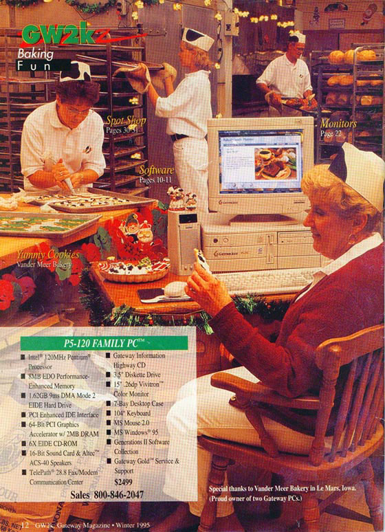

Have a Cow
This photo was taken in the bakery in 1995 by Gateway for the winter edition of GW2K magazine. We baked several hundred dollars worth of bakery products, just for this picture. Even the desk with the computer on it was taken out of the office for the photo. They started setting up at noon, and didn't finish until after five. There was a generator in a truck behind the bakery to get enough power to run the lighting. Karen Taylor from the Sunkist bakery in Sioux City was decorating cookies, the lady at the desk, and the other worked for Gateway.
The cow shaped cookies turned out well, and we even got an order for them from someone on the east coast.

Pete Jr. and crew wearing special cow hats for the occasion.